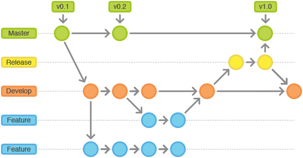

Git
gitは，ソースコードなどの変更履歴を記録・追跡できる分散型バージョン管理システムです．
導入
Gitのインストール
macOSには標準でgitがインストールされています．
$ which git
/usr/bin/git
$ git --version
git version 2.17.1 (Apple Git-112)
不具合があれば，下記サイトを参考にgitをインストールしてください．
https://tracpath.com/bootcamp/git-install-to-mac.html
Gitの設定
Gitをインストールしたときに最初にすべきことは，「ユーザ名とEmailアドレス」を設定することです．全てのGitのコミットはこの情報を用いるため，作成するコミット(後述)でこの情報が参照されます．
$ git config --global user.email "you@example.com"
$ git config --global user.name "Your Name"
Githubアカウントの作成
https://github.com/ へアクセスして，Username・Email・Passwordを入力して「Sign up for GitHub」をクリックすれば完了です．
入門編: インデックス・コミット・リポジトリ
よく使うコマンドは，こんな感じ．
$ git init # 1.初期化(.git作成)
$ git add . # 2.変更情報をインデックスに追加
$ git commit -m "edit foo.html" # 3.コミットを作成
$ git remote add origin {Remote Repository URL} # 4. リモートリポジトリを追加
$ git push -u origin master # 5.コミットをリモートリポジトリorigin/masterへプッシュ
git init
コマンドの通り，初期化(initialize)をしています．「git initを実行したディレクトリ以下のファイルをGitで管理をする」ために色々下準備をしてくれます(.gitという隠しディレクトリができて、そこにメタ情報が追加されてます)．
git add <filepath>
Gitにはインデックス(Index)という，「どのファイルを管理対象にするかを記録するエリア」があります．git addはインデックスにファイルやディレクトリを追加(add)するためのコマンドです．いくらファイルを編集しても，git addをしなくては編集内容がインデックスに反映されず、git commitをしても編集されていないと怒られてしまいます．git add .を使うのかgit add -uを使うのかgit add -Aを使うのかについてはこちらが参考になります．
git commit -m "Commit message"
Gitを利用するにあたって，最重要と言ってもいいコマンドです(個人の感想)．コミット(Commit)という概念がGitでは非常に重要です．
コミット(Commit)とは「ディレクトリやファイルの追加・変更・削除等を記録したひとかたまりのこと」をいいます．別の言い方をすると，git addでインデックスに追加された変更をログとして記録しているものです．git commitをした時点の最新インデックスと，一つ前のcommitを比較し，変更点を記録します．このcommitを元に、過去のある時点の状態に戻したりすることができるのです．各commitには、メッセージ(メモ的なもの)を付与することができます．commitにはIDが自動的に付与されるのですが，それを見ただけでは当然変更点はわかりません．また，差分(ファイルの変更箇所)を確認することができても，その差分が一体何を意味しているのかをひと目見て把握することは非常に困難です．
何か不具合が見つかり過去のcommitに状態を戻すときなど，過去のcommitを見返したときにメッセージを見て大まかに把握できるようにしましょう．わかりやすいcommitメッセージを書くコツは「定型的で簡潔」に書くことです．実際にどのようにどんな単語を使って書けばいいのかはこちらの記事がよくまとまっていますので，一度目を通しておくことをオススメします．最初のうちは理由や説明を書くのがの難しいと思うので，一行目の概要を書くだけで十分だと思います．
(いまいちしっくりこないって方はこちらを見るなりググるなりしてください)
git remote add origin {Remote Repository URL}
このコマンドは普通最初以外出てこないので，ほぼ「魔法の呪文」みたく丸暗記している方も多いと思います．しかし，このコマンドはGitをネットワーク上で管理するのに不可欠なコマンドであり，軽く見ているといつか痛い目にあいます．
Gitでは管理する一つの塊をリポジトリ(Repository)といいます．管理したいリポジトリはもちろんローカルだけで管理することもできますが，それをネットワーク上にアップロードして、リモートで管理することもできます．本来，ネットワーク上でRepositoryを管理するにはそれ用のサーバが必要ですが，GitHubは 無償 でRepositoryを保存する領域を提供してくれています．その リモート先のURLを情報として追加するためのコマンド がgit remote addです．
URLの前にoriginとありますが，これは一体何者でしょうか？originの位置に指定する単語は，リモートリポジトリ URLを格納する 変数名 です(毎回URLを入力するのは面倒くさい)．
git push -u origin master
ローカルで作成したコミット(Commit)をネットワーク上(Githubのサーバ上)のリモートリポジトリに反映させるには，git pushコマンドを実行する必要があります．「リモートリポジトリに最新のコミットを反映させる」コマンドがgit pushになります．
発展編: ブランチ
git push -u origin masterを見たときに，git pushやoriginは理解できたけどmasterって何？uオプションはなにを意味するの？という疑問が出てきます．
「最新のcommitを指すポインタ的なもの」がHEADです．HEADをみたら最新のcommitのことなんだなと思いましょう．そして，あるcommitを指す変数を ブランチ(Branch) といいます．masterはGitが最初から用意しているbranchです．branchはいくつでも作ることができます．ブランチについて，詳しくはこちらを参照してください．

試しにgit branch hogeとしてbranchを作成してみましょう．git branchとすることで今ローカルにあるbranchが確認できます．
$ git branch hoge
$ git branch
hoge
* master
「*」がついているのが現在のbranchです．現在のbranchが指しているcommitをRemote RepositoryへPushします．だからgit push origin masterなのです．branchを切り替えるにはgit checkout hogeとします．
$ git checkout hoge
Switched to branch 'hoge'
$ git branch
* hoge
master
では，branchを変えることにはどのような利点があるのでしょうか？
たとえばhogeでファイルAを追加して何か編集して，commitを作成します．その後にmasterへ戻ると，さきほど作成・編集をしたファイルAが消えてます．なぜなら，masterはファイルAに関するcommitを作成する前のcommitを指しているからです．masterが指しているcommitにはファイルAの存在自体がないので、切り替えたら消えるというのは当然といえば当然です．
hogeの内容をmasterに反映させるにはどうすればよいのでしょうか？git merge hogeというふうにすれば解決です．このコマンドは，hogeを作成した(masterから分岐させた)ときから，hogeが指してきたcommit達をmasterに取り込む(マージ)コマンドです．git merge hogeを行うとき，まずgitはmasterが指しているcommitとhogeが指しているcommitを比較したあと，色々整合させるための処理をして， ひとつのcommit を作成します。mergeをしたときに作成されたcommitを merge commit と呼びます．そして，mergeが完了したらRemote RepositoryへPushしてあげましょう．
当然別々の歴史を持っているので，同じ箇所を編集してしまっていたということもあるでしょう．同じ箇所を編集していて，mergeできない状態を コンフリクト(Conflict)を起こした といいます．conflictが起こった場合は，その部分を手動で修正し，git addでインデックスに編集内容を追加します．その後、commitを作成します．conflictを起こすと，Gitはmerge commitを作成してくれません．あとはそのcommitをPushして終了です．
Gitの抽象概念まとめ
-
インデックス(Index)
- どのファイルを管理対象にするかを記録するエリア
-
コミット(Commit)
-
ディレクトリやファイルの変更(追加・編集・削除)を記録したひとかたまり
- すべてのコミットは，IDとCommit Messageをもつ．
- Gitのバージョン管理はブランチとコミットを基に行う，
-
-
ブランチ(Branch)
- あるcommitを指す変数
- コミット(=変更履歴)の流れを分岐して記録していくためのもの
- チェックアウト：ブランチを切り替えること．
- マージ：2つのブランチを統合すること．
- コンフリクト：マージ時に変更内容が重複した場合に生じるエラー
-
リポジトリ(Repository)
- Gitでバージョン管理するデータのひとかたまり．
- ローカルサーバ上にあるリポジトリを「ローカルリポジトリ」という
- リモートサーバ上にあるリポジトリを「リモートリポジトリ」という